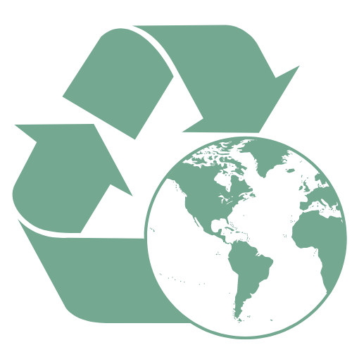

Buy food in bulk and store them in reusable containers to avoid single-use plastics.
Invest in a water filter or a reusable water bottle.
Replace plastic bags with a reusable produce bag.
Shop at your local farmers market and get fresh produce.
Switch to digital documents to save paper and ink whenever you can.
Recycling is a major factor to protecting Earth’s resources. It can save energy and reduce greenhouse gas emissions, however, poor recycling, or recycling incorrectly can be harmful. It is important to know how your community handles recycling including: what you can and cannot recycle and if products need to be sorted out. Think twice before throwing something in the trash, there are lots of items that can be recycled and reused.
Can
Paper
Glass
Plastic
The process of composting is how nature recycles. It is one of the most effective things we can do to lessen our trash, combat climate change and create healthy soil. It can transform waste streams into a useful soil supplement that protects the environment. Composting can include leaves, grass clippings, yard trimmings and food scraps that would otherwise be disposed of in landfills and release greenhouse gasses into the atmosphere. It improves soil quality, stops soil erosion, saves water and promotes plant growth. With minimal labor, equipment, money and expertise, composting can change the amount of trash humans produce each day.